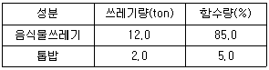
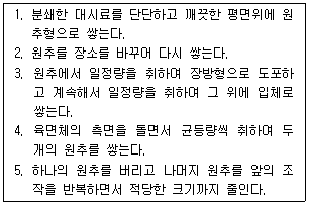
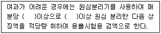
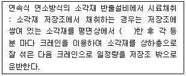
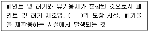
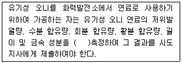
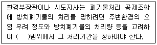

폐기물처리산업기사 (2013-06-02 기출문제)
1과목: 폐기물개론
1. 함수율 80%인 음식물쓰레기와 함수율 50%인 퇴비를 3:1의 무기비로 혼합하면 함수율은? (단, 비중은 1.0 기준)
- 66.5%
- 68.5%
- 72.5%
- 74.5%
(정답률: 100%)

2. 국내 쓰레기 수거노선 설정시 유의할 사항으로 옳지 않은 것은?
- 발생량이 아주 많은 곳은 하루 중 가장 먼저 수거한다.
- 될 수 있는 한 한번 간 길은 가지 않는다.
- 가능한 한 시계방향으로 수거노선을 정한다.
- 적은양의 쓰레기는 다른 날 왕복 내에서 수거한다.
(정답률: 95%)
3. 쓰레기 발생량에 영향을 주는 인자에 관한 설명으로 옳은 것은?
- 쓰레기통이 작을수록 쓰레기 발생량이 증가한다.
- 수집빈도가 높을수록 쓰레기 발생량이 증가한다.
- 생활수준이 높을수록 쓰레기 발생량이 감소한다.
- 도시규모가 작을수록 쓰레기 발생량이 증가한다.
(정답률: 92%)
4. 폐기물의 입도 분석결과 입도 누적곡선상의 10%, 40%, 60%, 90%의 입경이 각각 1, 5, 10, 20 mm 였다. 이 때 유효입경과 균등계수는?
- 유효입경 10mm, 균등계수 2.0
- 유효입경 10mm, 균등계수 1.0
- 유효입경 1.0mm, 균등계수 10
- 유효입경 1.0mm, 균등계수 20
(정답률: 93%)
5. 새로운 쓰레기 수집방법 중 pipe-line 방식에 관한 설명으로 틀린 것은?
- 쓰레기 발생빈도가 높은 인구밀집지역에서 현실성이 있다.
- 대형폐기물에 대한 전처리가 필요하다.
- 잘못 투입된 물건은 회수하기가 곤란하다.
- 장거리 이송이 용이하다.
(정답률: 73%)
6. 함수율이 35%인 쓰레기를 함수율 7%로 감소시키면 감소시킨 후의 쓰레기 중량은 처음 중량의 약 몇 %가 되는가? (단, 쓰레기 비중은 1.0)
- 약 80%
- 약 75%
- 약 70%
- 약 65%
(정답률: 알수없음)
7. 400세대 2000명이 생활하는 아파트에서 배출하는 쓰레기를 4일마다 수거하는데, 적재용량 8.0m3짜리 트럭 6대가 소요된다. 쓰레기의 용적당 중량은 400kg/m3 라면 1인당 1일 쓰레기 배출량은? (단, 기타 조건은 고려하지 않음)
- 5.2 kg
- 4.1 kg
- 3.2 kg
- 2.4 kg
(정답률: 75%)
8. 쓰레기 발생량 조사방법과 가장 거리가 먼 것은?
- 물질 수지법
- 경향법
- 적재차량 계수분석
- 직접 계근법
(정답률: 100%)
9. 다음은 쓰레기 부피감소율(%)의 변화이다. 이 중 가장 큰 압축비의 증가를 요하는 경우는?
- 부피감소율 30 → 60 증가
- 부피감소율 60 → 80 증가
- 부피감소율 80 → 95 증가
- 부피감소율 90 → 95 증가
(정답률: 70%)
10. 어떤 도시에서 발생 되는 쓰레기를 인부 50명이 수거 운반할 때의 MHT는? (단, 1일 10시간 작업, 연간수거실적은 1,220,000ton, 휴가일수 60일/년·인)
- 약 1.⑤
- 약 0.81
- 약 0.33
- 약 0.13
(정답률: 95%)
11. 밀도가 650kg/m3인 쓰레기 10톤을 압축시켜 부피를 5m3으로 만들었다면 부피감소율(Volume Reduction, %)는?
- 약 79
- 약 73
- 약 68
- 약 62
(정답률: 90%)
12. 메탄의 고위발열량이 9250 kcal/Nm3 이라면 저위발열량은?
- 8290 kcal/Nm3
- 8360 kcal/Nm3
- 8470 kcal/Nm3
- 8530 kcal/Nm3
(정답률: 알수없음)
13. 인구 1,000,000인 도시에서 1일 1인당 1.8kg의 쓰레기가 발생하고 있다. 1년 동안에 발생한 쓰레기의 총 부피는? (단, 쓰레기 밀도는 0.45kg/L이며 인구 및 발생량 증가, 압축에 의한 변화는 무시한다.)
- 1260000 m3/년
- 1460000 m3/년
- 1630000 m3/년
- 1820000 m3/년
(정답률: 84%)
14. 80%의 수분을 함유하고 있는 초기슬러지 100kg을 건조 하여 수분함량을 50%로 만들었을 때 증발된 물의 양은? (단, 슬러지 비중은 1.0)
- 30 kg
- 40 kg
- 50 kg
- 60 kg
(정답률: 57%)
15. 직경이 3.5m인 Trommel screen의 최적속도는?
- 25 rpm
- 20 rpm
- 15 rpm
- 10 rpm
(정답률: 85%)
16. 2차 파쇄를 위해 5cm의 폐기물을 1cm로 파쇄 하는데 소요되는 에너지(kWh/ton)는? (단, Kick의 법칙(E=C·ln(L1/L2)을 이용할 것, 동일한 파쇄기를 이용하여 10 cm의 폐기물을 1cm로 파쇄 하는데에는 에너지가 50kWh/ton 소모됨)
- 약 30
- 약 35
- 약 40
- 약 45
(정답률: 알수없음)
17. 적환장의 설치장소로 적당하지 않은 것은?
- 쓰레기 발생지역의 무게중심에서 가능한 먼 곳
- 주요간선도로와 가까운 곳
- 환경피해가 최소인 곳
- 설치 및 작업이 쉬운 곳
(정답률: 100%)
18. pH가 3인 폐산 용액은 pH 5인 폐산 용액에 비하여 수소이온이 몇 배 더 함유되어 있는가?
- 2배
- 15배
- 20배
- 100배
(정답률: 87%)
19. 쓰레기를 소각했을 때 남은 재의 중량은 쓰레기 중량의 약 1/5이다. 쓰레기 95ton을 소각 했을 때 재의 용적이 7m3라고 하면 재의 밀도는?
- 2.31 ton/m3
- 2.51 ton/m3
- 2.71 ton/m3
- 2.91 ton/m3
(정답률: 94%)
20. 적환장이 필요한 경우와 가장 거리가 먼 것은?
- 저밀도 주거지역이 존재하는 경우
- 불법투기와 다량의 어지러진 쓰레기들이 발생하는 경우
- 상업지역에서 폐기물 수집에 대형용기를 많이 사용하는 경우
- 슬러지 수송이나 공기수송 방식을 사용하는 경우
(정답률: 70%)
2과목: 폐기물처리기술
21. 처리용량이 100kL/day인 분뇨처리장에 서 가스저장 탱크를 설계하고자 한다. 가스 저류시간을 6시간으로 하고 생성 가스량을 투입량의 10배로 가정하면 가스탱크의 용량은?
- 100 m3
- 150 m3
- 200 m3
- 250 m3
(정답률: 69%)
22. 중량비로 80% 수분을 함유한 폐수에 응집제를 가하여 침전시켰더니 상등액과 침전 슬러지의 용적비가 1:2로 되었다. 이 때의 침전 슬러지의 수분은 약 몇 % 인가? (단, 응집제의 무게는 무시할 정도로 작으며 상등액의 SS농도는 무시함)
- 70%
- 75%
- 80%
- 85%
(정답률: 50%)
23. 다음과 같은 조건의 음식물쓰레기와 톱밥을 혼합한 후 건조시킨 결과, 함수량 25%의 쓰레기가 만들어졌다면 건조된 쓰레기는 몇 ton인가? (단, 비중은 1.0기준)

- 4.93
- 5.33
- 6.32
- 7.12
(정답률: 알수없음)
24. 합성차수막인 PVC의 장·단점을 설명한 내용으로 틀린 것은?
- 강도가 높다.
- 접합이 용이하다.
- 자외선, 오존, 기후에 약하다.
- 대부분의 유기화학물질에 강하다.
(정답률: 86%)
25. 토양오염의 특징으로 틀린 것은?
- 오염경로의 다양성
- 피해발현의 완만성
- 타 환경인자와의 영향관계의 모호성
- 오염(영향)의 광역성 및 인지성
(정답률: 54%)
26. 고화처리방법 중 열가소성 플라스틱법의 장·단점이 아닌 것은?
- 용출 손실률이 시멘트 기초법보다 낮다.
- 혼합율(MR)이 비교적 높다.
- 고온 분해되는 물질에 사용된다.
- 처리과정에서 화재의 위험성이 있다.
(정답률: 50%)
27. 어느 분뇨 처리장에서 잉여슬러지량은 분뇨 처리량의 30%이며 함수율은 99%이다. 이 것을 농축조에서 함수율 98%로 농축하여 탈수기로 탈수시키고자 한다. 탈수기는 일주일 중 6일을 운전하고 1일 8시간씩 가동한다면 탈수기의 슬러지 처리 능력은? (단, 비중은 1.0, 1일 분뇨 처리량은 200kL이다.)
- 1.8
- 2.9
- 3.6
- 4.4
(정답률: 34%)
28. 용량 1⑤m3의 매립지가 있다. 밀도 0.5 ton/m3인 도시 쓰레기가 400,000kg/일율로 발생된다면 매립지 사용일수는? (단, 매립지 내의 다짐에 의한 쓰레기의 부피감소율은 50%이다.)
- 125일
- 250일
- 312일
- 421일
(정답률: 45%)
29. 소각처리에 있어서 생성된 다이옥신의 배출을 최소화 할 수 있는 기술로써 보편적으로 활성탄 주입시설과 함께 가장 많이 사용되는 집진 설비는?
- 원심력 집진기
- 전기 집진기
- 세정식 집진기
- 백필터 집진기
(정답률: 82%)
30. 소각로의 연소능력이 250kg/m2·h이며, 쓰레기량이 30,000kg/일 이다. 1일 8시간 소각하면 로의 면적은?
- 15 m2
- 20 m2
- 25 m2
- 30 m2
(정답률: 84%)
31. 매립되는 총고형물 20,000g/m3 인 폐기물 100m3 중 휘발성 고형물이 60%(W/W%)이었다면 CH4 발생량은? (단, 발생량은 CH4 Vs 1kg당 0.5m3이다.)
- 600 m3
- 700 m3
- 800 m3
- 900 m3
(정답률: 34%)
32. 표면차수막과 연직차수막을 비교한 내용으로 틀린 것은?
- 차수성 확인 : 연직차수막은 지하에 매설하기 때문에 확인이 어렵다.
- 경제성 : 표면차수막은 단위면적당 공사비가 비싼 반면 총 공사비는 싸다.
- 보수 : 연직차수막은 차수막 보강시공이 가능하다.
- 지하수집배수시설 : 표면차수막은 필요하다.
(정답률: 73%)
33. 토양의 용적밀도가 1.56g/cm3이고, 입자밀도가 2.45g/cm3일 때 공극률은? (단, 물의 비중은 1로 가정하며 기타조건은 고려하지 않음)
- 36.3%
- 38.5%
- 40.4%
- 43.5%
(정답률: 75%)
34. 탄소 81%, 수소 16%, 황 3%로 구성된 중유 10kg의 연소에 필요한 이론 공기량은?
- 115.7 Sm3
- 107.7 Sm3
- 95.8 Sm3
- 88.7 Sm3
(정답률: 65%)
35. 유동상 소각로의 장단점이 아닌 것은?
- 기계적 구동부분이 적어 고장율이 낮다.
- 상(床)으로부터 찌꺼기의 분리가 어렵다.
- 로내 온도의 자동제어로 열회수가 용이하다.
- 가스온도가 높고 과잉공기량이 많다.
(정답률: 68%)
36. 수분함량이 97%인 슬러지의 비중은? (단, 고형물의 비중은 1.35)
- 약 1.062
- 약 1.042
- 약 1.028
- 약 1.008
(정답률: 75%)
37. 침출수를 혐기성여상으로 처리할 때 유입유량 3,000m3/day이고 BOD가 600mg/L이며 처리효율이 95%이다. 이때 발생되는 메탄가스의 양은? (단, 1.5m3 가스/BOD kg, 가스 중 메탄 함량 60%, 표준상태 기준)
- 약 1,270 m3/day
- 약 1,367 m3/day
- 약 1,420 m3/day
- 약 1,539 m3/day
(정답률: 74%)
38. 3,785 m3/day 규모의 하수처리장 유입수의 BOD와 SS 농도가 각각 200mg/L 라고 하고 1차 침전에 의하여 SS는 50%, BOD는 30%(SS제거에 따른 감소)가 제거된다고 할 때 1차 슬러지의 양은? (단, 비중은 1.0, 고형물 기준)
- 378.5 kg/day
- 400.1 kg/day
- 512.4 kg/day
- 6⑤.6 kg/day
(정답률: 72%)
39. 폐기물 고화처리시 고화재의 종류에 따라 무기적 방법과 유기적 방법으로 나눌 수 있다. 유기적 고형화에 관한 설명으로 틀린 것은?
- 수밀성이 크며 다양한 폐기물에 적용할 수 있다.
- 최종 고화체의 체적 증가가 거의 균일하다.
- 미생물, 자외선에 대한 안정성이 약하다.
- 상업화된 처리법의 현장자료가 빈약하다.
(정답률: 75%)
40. 함수율 98%인 슬러지 3000m3를 함수율 30%로 처리하여 매립하였다면, 매립된 슬러지의 중량은? (단, 비중은 1.0 기준)
- 약 75 톤
- 약 86 톤
- 약 92 톤
- 약 98 톤
(정답률: 100%)
3과목: 폐기물 공정시험 기준(방법)
41. 다음 내용이 나타내고 있는 시료의 분할 채취방법은?

- 구획법
- 교호삽법
- 원추 2분법
- 원추 4분법
(정답률: 알수없음)
42. 폐기물의 수소이온농도 측정시 적용되는 정밀도에 관한 기준으로 옳은 것은?
- 임의의 한 종류의 pH 표준용액에 대해 검출부를 정제수로 잘 씻은 다음 5회 되풀이 하여 pH를 측정하였을 때 그 재현성이 ±0.⑤ 이내이어야 한다.
- 임의의 한 종류의 pH 표준용액에 대해 검출부를 정제수로 잘 씻은 다음 5회 되풀이 하여 pH를 측정하였을 때 그 재현성이 ±0.1 이내이어야 한다.
- 임의의 한 종류의 pH 표준용액에 대해 검출부를 정제수로 잘 씻은 다음 10회 되풀이 하여 pH를 측정하였을 때 그 재현성이 ±0.⑤ 이내이어야 한다.
- 임의의 한 종류의 pH 표준용액에 대해 검출부를 정제수로 잘 씻은 다음 10회 되풀이 하여pH를 측정하였을 때 그 재현성이 ±0.1 이내이어야 한다.
(정답률: 79%)
43. 총칙에서 규정하고 있는 내용 중 옳은 것은?
- '약'이라 함은 기재된 양에 대하여 ±5% 이상의 차가 있어서는 안 된다.
- '방울수'라 함은 0℃에서 정제수 20방울을 적하할 때 그 부피가 약 1㎖ 되는 것을 말한다.
- '감압 또는 진공' 이라 함은 5mmHg 이하를 말한다.
- '냄새가 없다' 라고 기재한 것은 냄새가 없거나 또는 거의 없는 것을 표시하는 것이다.
(정답률: 84%)
44. 유기인을 기체크로마토그래피로 분석할 때 사용하는 검출기와 가장 거리가 먼 것은?
- 질소인 검출기
- 열전도도 검출기
- 전자포획형 검출기
- 불꽃광도 검출기
(정답률: 70%)
45. 다음 농도표시에 대한 설명으로 틀린 것은?
- 용액의 농도를 '%' 로만 표시할 때는 W/V%를 말한다.
- 천분율은 g/ℓ의 기호를 쓴다.
- 단위면적(A, area) 중 성분의 면적(A)를 표시할 때는 A/A%(area)의 기호를 쓴다.
- 일억분율은 μg/ℓ의 기호를 쓴다.
(정답률: 78%)
46. 폐기물 운반용 차량에 적재된 폐기물 중에서 시료를 채취하고자 한다. 시료채취 기준으로 옳은 것은?(오류 신고가 접수된 문제입니다. 반드시 정답과 해설을 확인하시기 바랍니다.)
- 5톤 미만 차량 적재시 적재 폐기물을 평면상에서 2등분 한 후 각 등분마다 시료 채취
- 5톤 미만 차량 적재시 적재 폐기물을 평면상에서 6등분 한 후 각 등분마다 시료 채취
- 5톤 미만 차량 적재시 적재 폐기물을 평면상에서 4등분 한 후 각 등분마다 시료 채취
- 5톤 미만 차량 적재시 적재 폐기물을 평면상에서 9등분 한 후 각 등분마다 시료 채취
(정답률: 7%)
47. 다음 중 유도결합플라스마-원자발광분광법으로 측정하는 것은? (단, 폐기물공정 시험기준(방법) 기준)
- 유기인
- 수은
- 비소
- 시안
(정답률: 24%)
48. 다음 용출조작에 관한 설명 중 ( )안에 옳은 내용은?

- 2000회전, 20분
- 2000회전, 30분
- 3000회전, 20분
- 3000회전, 30분
(정답률: 54%)
49. 폐기물 시료의 전처리방법인 질산-과염소산 분해법에 대한 설명과 가장 거리가 먼 것은?
- 유기물을 다량 함유하고 있으면서 산화분해가 어려운 시료들에 적용한다.
- 과염소산을 넣을 경우 진한질산이 공존하지 않으면 폭발할 위험이 있다.
- 유기물분해가 완전히 끝나지 않아 액이 맑지 않을 때에는 다시 진한질산 5mL를 넣고 가열을 반복한다.
- 부피기준으로 질산과 과염소산은 동일한 비율로 주입, 분해한다.
(정답률: 알수없음)
50. 대상폐기물의 양이 800톤인 경우, 시료의 최소 수는?
- 36
- 42
- 50
- 60
(정답률: 84%)
51. 다음은 폐기물 소각시설의 소각재 시료 채취에 관한 내용이다. ( )안에 내용으로 옳은 것은?

- 4등분
- 5등분
- 6등분
- 9등분
(정답률: 50%)
52. 강열감량 및 유기물함량(중량법) 측정시 전기로 강열 과정 전, 시료의 탄화를 위해 주입하는 시약은?
- 불화수소산용액
- 과염소산용액
- 과망간산칼륨용액
- 질산암모늄용액
(정답률: 67%)
53. pH값 크기순으로 pH 표준액을 바르게 나열한 것은? (단, 20℃ 기준)
- 수산염표준액 ＜ 프탈산염표준액 ＜ 붕산염표준액 ＜ 수산화칼슘표준액
- 프탈산염표준액 ＜ 인산염표준액 ＜ 탄산염표준액 ＜ 수산염표준액
- 탄산염표준액 ＜ 붕산염표준액 ＜ 수산화칼슘표준액 ＜ 수산염표준액
- 인산염표준액 ＜ 수산염표준액 ＜ 붕산염표준액 ＜ 탄산염 표준액
(정답률: 알수없음)
54. 폐기물 중의 기름성분의 추출에 사용되는 물질은?
- 클로로폼
- 사염화탄소
- 벤젠
- 노말헥산
(정답률: 84%)
55. 시험분석 대상물질을 기기가 검출할 수 있는 최소한의 농도 또는 양을 나타내는 기기 검출한계에 관한 내용으로 옳은 것은?
- 바탕시료를 반복 측정 분석한 결과의 표준편차에 2배한 값
- 바탕시료를 반복 측정 분석한 결과의 표준편차에 3배한 값
- 바탕시료를 반복 측정 분석한 결과의 표준편차에 5배한 값
- 바탕시료를 반복 측정 분석한 결과의 표준편차에 10배한 값
(정답률: 80%)
56. 10ppm은 몇 %가 되는가?
- 1.0%
- 0.1%
- 0.01%
- 0.001%
(정답률: 63%)
57. 총칙 중 온도에 관한 내용으로 틀린 것은?
- 찬 곳은 따로 규정이 없는 한 0~15℃의 곳을 뜻한다.
- 냉수는 4℃ 이하를 말한다.
- 온수는 60~70℃를 말한다.
- 실온은 1~35℃로 한다.
(정답률: 46%)
58. 용출시험 방법 중 시료액의 조제 또는 용출조작에 관한 내용으로 옳은 것은?
- 시료적당량을 정밀하게 달아 정제수에 황산(1+2)을 넣어 pH 4 이하로 만든 용매에 넣어 혼합한다.
- 시료(g) : 용매(g)는 1 : 100(W:W) 비율로 혼합한다.
- 진탕 후 1.0㎛의 유리섬유여과지로 여과하고 여과액을 적당량 취하여 용출시험용 시료용액으로 한다.
- 진탕회수는 매분 당 약 300회, 진폭은 4~5cm의 진탕기를 사용하여 8시간 연속 진탕한다.
(정답률: 67%)
59. 청석면의 형태와 색상에 관한 내용으로 틀린 것은?
- 곧은 섬유와 섬유다발
- 종횡비는 전형적으로 1:4 이상
- 특징적인 청색과 다색성
- 다발 끝은 분산된 모양
(정답률: 70%)
60. 자외선/가시선 분광법에 의한 시안 측정 시 사용 시약 중 잔류염소를 제거하기 위한 시약은?
- 질산(1+4)
- 클로라민 T
- L-아스코빈산
- 아세트산아연 용액
(정답률: 82%)
4과목: 폐기물 관계 법규
61. 폐기물 관리의 기본원칙과 가장 거리가 먼 것은?
- 폐기물은 중간처리보다는 소각 및 매립의 최종처리를 우선하여 비용과 유해성을 최소화 하여야 한다.
- 폐기물로 인하여 환경오염을 일으킨 자는 오염된 환경을 복원할 책임을 지며, 오염으로 인한 피해의 구제에 드는 비용을 부담하여야 한다.
- 국내에서 발생한 폐기물은 가능하면 국내에서 처리되어야 하고, 폐기물의 수입은 되도록 억제 되어야 한다.
- 누구든지 폐기물을 배출하는 경우에는 주변 환경이나 주민의 건강에 위해를 끼치지 아니하도록 사전에 적절한 조치를 하여야 한다.
(정답률: 82%)
62. 다음은 지정폐기물 중 폐페인트 및 폐래커에 관한 기준이다. ( )안에 옳은 내용은?

- 용적 3세제곱미터 이상 또는 동력 3마력 이상
- 용적 3세제곱미터 이상 또는 동력 5마력 이상
- 용적 5세제곱미터 이상 또는 동력 3마력 이상
- 용적 5세제곱미터 이상 또는 동력 5마력 이상
(정답률: 알수없음)
63. 폐기물처리시설(소각시설, 소각열회수시설이나 멸균분쇄시설)의 검사를 받으려는 자가 해당 검사기관에 검사신청서와 함께 첨부하여 제출하여야 하는 서류와 가장 거리가 먼 것은?
- 설계도면
- 폐기물조성비 내용
- 설치 및 장비확보 명세서
- 운전 및 유지관리계획서
(정답률: 50%)
64. 폐기물 발생 억제 지침 준수의무 대상 배출자의 규모기준으로 옳은 것은?
- 최근 3년간 연평균 배출량을 기준으로 지정폐기물을 100톤 이상 배출하는 자
- 최근 3년간 연평균 배출량을 기준으로 지정폐기물을 200톤 이상 배출하는 자
- 최근 3년간 연평균 배출량을 기준으로 지정폐기물을 300톤 이상 배출하는 자
- 최근 3년간 연평균 배출량을 기준으로 지정폐기물을 500톤 이상 배출하는 자
(정답률: 80%)
65. 환경부령으로 정하는 폐기물처리시설의 설치를 마친 자는 환경부령으로 정하는 검사기관으로부터 검사를 받아야 한다. 폐기물처리시설이 시멘트 소성로의 경우, 검사기관으로 틀린 것은?
- 한국환경공단
- 한국기계연구원
- 한국산업기술시험원
- 한국건설기술연구원
(정답률: 34%)
66. 생활폐기물이 배출되는 토지나 건물의 소유자, 점유자 또는 관리자는 관할 특별자치도, 시군구의 조례로 정하는 바에 따라 생활환경 보전상 지장이 없는 방법으로 그 폐기물을 스스로 처리하거나 양을 줄여서 배출하여야 한다. 이를 위반한 자에 대한 과태료 기준은?
- 100만원 이하의 과태료
- 200만원 이하의 과태료
- 300만원 이하의 과태료
- 500만원 이하의 과태료
(정답률: 86%)
67. 다음은 폐기물처리업자(폐기물 재활용업자)의 준수사항에 관한 내용이다. ( )안에 옳은 내용은?

- 매 월 1회 이상
- 매 2월 1회 이상
- 매 분기당 1회 이상
- 매 반기당 1회 이상
(정답률: 90%)
68. 매립시설의 기술관리인 자격기준과 가장 거리가 먼 것은?
- 수질환경기사
- 대기환경기사
- 토양환경기사
- 토목기사
(정답률: 55%)
69. 수입폐기물을 수입할 당시의 성질과 상태 그대로 수출한 자에 대한 벌칙 기준은?
- 1년 이하의 징역이나 1천만원 이하의 벌금
- 2년 이하의 징역이나 1천5백만원 이하의 벌금
- 2년 이하의 징역이나 2천만원 이하의 벌금
- 3년 이하의 징역이나 2천만원 이하의 벌금
(정답률: 42%)
70. 사후관리 항목 및 방법에 따라 조사한 결과를 토대로 매립시설이 주변환경에 미치는 영향에 대한 종합보고서를 매립시설의 사용종료신고 후 몇 년 마다 작성하여야 하는가?
- 1년
- 2년
- 3년
- 5년
(정답률: 알수없음)
71. 위해의료폐기물의 종류 중 시험, 검사 등에 사용된 배양액, 배양용기, 보관균주, 폐시험관, 슬라이드, 커버글라스, 폐배지, 폐장갑이 해당되는 것은?
- 생물·화학폐기물
- 손상성폐기물
- 병리계폐기물
- 조직물류폐기물
(정답률: 80%)
72. 토지이용의 제한 기간은 폐기물매립시설이 사용이 종료되거나 그 시설이 폐쇄된 날부터 몇 년 이내로 하는가?
- 15년
- 20년
- 25년
- 30년
(정답률: 알수없음)
73. 폐기물처리업의 허가를 받을 수 없는 자의 기준으로 틀린 것은?
- 미성년자
- 파산선고를 받은 자로서 파산선고를 받은 날부터 2년이 지나지 아니한 자
- 폐기물관리법을 위반하여 징역 이상의 형을 선고받고 그 형의 집행이 끝나거나 집행을 받지 아니하기로 확정된 후 2년이 지나지 아니한 자
- 폐기물처리업의 허가가 취소된 자로서 그 허가가 취소된 날부터 2년이 지나지 아니한 자
(정답률: 87%)
74. 기술관리인을 두어야 하는 폐기물처리시설 기준으로 틀린 것은? (단, 폐기물처리업자가 운영하는 폐기물처리시설은 제외)
- 시멘트 소성로
- 소각열회수시설로서 시간당 재활용능력이 600킬로그램 이상인 시설
- 멸균분쇄시설로서 시간당 처분능력이 200킬로그램 이상인 시설
- 사료화, 퇴비화 또는 연료화시설로서 1일 재활용 능력이 5톤 이상인 시설
(정답률: 50%)
75. 폐기물관리법에서 사용하는 용어의 정의로 틀린 것은?
- 폐기물감량화시설 : 생산 공정에서 발생하는 폐기물의 양을 줄이고, 사업장내 재활용을 통하여 폐기물 배출을 최소화 하는 시설로서 대통령령으로 정하는 시설을 말한다.
- 사업장폐기물 : [대기환경보전법], [수질 및 수생태계 보전에 관한 법률] 또는 [소음진동관리법]에 따라 배출시설을 설치, 운영하는 사업장이나 그 밖에 대통령령으로 정하는 사업장에서 발생하는 폐기물을 말한다.
- 처리 : 폐기물의 소각, 중화, 파쇄, 고형화 등의 중간 처리와 매립하거나 해역으로 배출하는 등의 최종처리를 말한다.
- 지정폐기물 : 사업장 폐기물 중 폐유, 폐산 등 주변 환경을 오염시킬 수 있거나 의료폐기물 등 인체에 위해를 줄 수 있는 해로운 물질로서 대통령령이 정하는 폐기물을 말한다.
(정답률: 70%)
76. 폐기물처리시설 중 재활용시설인 화학적 재활용시설이 아닌 것은?
- 연료화 시설
- 고형화·고화 시설
- 반응시설(중화, 산화, 환원, 중합, 축합, 치환 등의 화학 반응을 이용하여 폐기물을 재활용하는 단위시설을 포함한다.)
- 응집·침전시설
(정답률: 20%)
77. 폐기물 감량화시설의 종류와 가장 거리가 먼 것은?
- 공정 개선시설
- 폐기물 전처리시설
- 폐기물 재이용시설
- 폐기물 재활용시설
(정답률: 69%)
78. 폐기물처리업의 시설, 장비 기술능력의 기준 중 사업장 배출시설폐기물을 수집·운반하는 경우의 기준으로 틀린 것은?
- 연락장소 또는 사무실
- 장비(액체상태폐기물을 수집·운반하는 경우) : 탱크로리 또는 카고트럭 2대 이상
- 장비(고체상태폐기물을 수집·운반하는 경우) : 암롤트럭, 컨테이너트럭, 덤프트럭, 밀폐식 운반차량
- 기술능력 : 폐기물처리산업기사, 대기환경산업기사, 수질환경산업기사 중 1명 이상
(정답률: 58%)
79. 주변지역 영향 조사대상 폐기물 처리시설 기준으로 옳은 것은? (단, 대통령령으로 정하며 폐기물처리업자 설치, 운영)
- 매립면적 1만 제곱미터 이상의 사업장 지정폐기물 매립시설
- 매립면적 2만 제곱미터 이상의 사업장 지정폐기물 매립시설
- 매립면적 3만 제곱미터 이상의 사업장 지정폐기물 매립시설
- 매립면적 5만 제곱미터 이상의 사업장 지정폐기물 매립시설
(정답률: 74%)
80. 다음은 방치폐기물의 처리기한에 관한 내용이다. ( )안에 옳은 내용은? (단, 연장 기간 제외)

- 1개월
- 2개월
- 3개월
- 6개월
(정답률: 62%)
따라서 혼합물의 함수율은 다음과 같이 계산할 수 있다.
함수율 = (음식물쓰레기의 함수율 x 음식물쓰레기의 비중) + (퇴비의 함수율 x 퇴비의 비중)
= (0.8 x 0.75) + (0.5 x 0.25)
= 0.6 + 0.125
= 0.725
즉, 혼합물의 함수율은 72.5%이다.